Movie Releases By Score
| 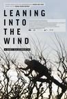 |
1701.
Leaning Into the Wind
Release Date:
March 9, 2018
Leaning into the Wind is a vibrant journey through the diverse layers of Andy Goldsworthy's world. From urban Edinburgh and London to the South of France and New England, each environment he encounters becomes a fresh kaleidoscopic canvas for his art. A lushly-visualized travelogue, Goldsworthy's work and Thomas Riedelsheimer's exquisite cinematography redefine landscape and inextricably tie human life to the natural world. [Magnolia Pictures]
|

|
1702.
A Poem Is a Naked Person
Release Date:
July 1, 2015
Les Blank's first feature-length documentary captures music and other events at Leon Russell's Oklahoma recording studio during a three-year period (1972-1974).
|
1703.
Broken Embraces
Release Date:
November 20, 2009

A man writes, lives and loves in darkness. Fourteen years before, he was in a brutal car crash on the island of Lanzarote. In the accident, he not only lost his sight, he also lost Lena, the love of his life. One night when he's asked about his life before the accident, the man can't refuse the chance to tell his story. (Sony Classics)
|
|

|
1704.
Kandahar
Release Date:
December 14, 2001
Set in Taliban-ruled Afghanistan, this is the story of Nafas (Pazira), a young female journalist who escaped the country to grow up in Canada and who returns incognito, smuggled in, to save her younger sister.
|

|
1705.
Rosetta
Release Date:
November 5, 1999
This film follows a young and impulsive Belgian girl, Rosetta (Émilie Dequenne), who tries to establish an independent life and will do anything to maintain a job.
|

|
1706.
Smoke Signals
Release Date:
June 26, 1998
Though Victor and Thomas have lived their entire young lives in the same tiny town, they couldn't have less in common! But when Victor is urgently called away, it's Thomas who comes up with the money to pay for his trip. There's just one thing Victor has to do: take Thomas along for the ride! (Miramax)
|

|
1707.
Grosse Pointe Blank
Release Date:
April 11, 1997
In this black comedy, a philosophical hit man (Cusack) reluctantly accepts an assignment in Detroit which coincides with his 10-year high school reunion in the upscale suburb of Grosse Point, Michigan.
|
| 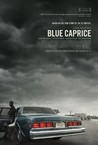 |
1708.
Blue Caprice
Release Date:
September 13, 2013
An exploration of the relationship between John Allen Muhammad and 17-year-old Lee Boyd Malvo, the perpetrators of the 2002 Beltway sniper attacks.
|

|
1709.
3 1/2 Minutes, 10 Bullets
Release Date:
June 19, 2015
Black Friday 2012, the day after Thanksgiving November 2012, four boys in a red SUV pull into a gas station after spending time at the mall buying sneakers and talking to girls. With music blaring, one boy exits the car and enters the store, a quick stop for a soda and a pack of gum. A man and a woman pull up next to the boys in the station, making a stop for a bottle of wine. The woman enters the store and an argument breaks out when the driver of the second car asks the boys to turn the music down. 3 1/2 minutes and ten bullets later, one of the boys is dead.
|

|
1710.
Spettacolo
Release Date:
September 6, 2017
Once upon a time, villagers in a tiny hill town in Tuscany came up with a remarkable way to confront their issues: they turned their lives into a play. Every summer, their piazza became their stage and residents of all ages played a part – the role of themselves. Monticchiello’s annual tradition has attracted worldwide attention and kept the town together for 50 years, but with an aging population and a future generation more interested in Facebook than farming, the town’s 50th–anniversary performance just might be its last. Spettacolo tells the story of Teatro Povero di Monticchiello, interweaving episodes from its past with its modern-day process as the villagers turn a series of devastating blows into a new play about the end of their world. [Grasshopper Film]
|

|
1711.
Tramps
Release Date:
April 21, 2017
Danny (Callum Turner) is an aspiring chef whose hustler brother asks him to complete a job for him. It all seems simple enough: meet a driver with a briefcase, proceed to a rendez-vous spot and exchange one briefcase for another. But Danny swaps the wrong bag, sending him and the driver Ellie (Grace Van Patten) on a two-day odyssey through the boroughs and suburbs of New York City. [Netflix]
|
1712.
Maggie's Plan
Release Date:
May 20, 2016
Maggie Hardin (Greta Gerwig) is a vibrant and practical thirty-something New Yorker working in education, who without success in finding love, decides now is the time to have a child on her own. But when she meets John Harding (Ethan Hawke), an anthropology professor and struggling novelist, Maggie falls in love for the first time, and adjusts her plans for motherhood. Complicating matters, John is in an unhappy marriage with Georgette Harding (Julianne Moore), an ambitious academic who is driven by her work. With some help from Maggie's best friends, married couple Tony (Bill Hader) and Felicia (Maya Rudolph), Maggie sets in motion a new plan that intertwines their lives and connects them in surprising and humorous ways. Maggie learns that sometimes destiny should be left to its own devices. [Sony Pictures Classics]
|
|
1713.
The Sure Thing
Release Date:
March 1, 1985

A college student (John Cusack) plans a cross-country trip to get laid, but ends up traveling with a young woman (Daphne Zuniga). They hate each other, so naturally...
|
|

|
1714.
Adventureland
Release Date:
April 3, 2009
It's the summer of 1987, and James Brennan , an uptight recent college grad, can't wait to embark on his dream tour of Europe. But when his parents announce they can no longer subsidize his trip, James has little choice but to take a lowly job at a local amusement park. Forget about German beer, world-famous museums and cute French girls -- James' summer will now be populated by belligerent dads, stuffed pandas, and screaming kids high on cotton candy. Lucky for James, what should have been his worst summer ever turns into quite an adventure as he discovers love in the most unlikely place with his captivating co-worker Em, and learns to loosen up. (Miramax Films)
|
| 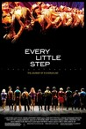 |
1715.
Every Little Step
Release Date:
April 17, 2009
Every Little Step explores the incredible journey of A Chorus Line from ambitious idea to international phenomenon. It compares and contrasts the original musical with the current revival. It investigates the societies in which they’ve debuted, and why the themes are so timeless and universal. Finally, it goes behind the scenes with exclusive interviews and footage of the revival’s audition process, revealing the dramatic journey of the performers, and unfolding a story of life imitating art. (Sony Pictures Classics)
|
1716.
Testament of Youth
Release Date:
June 5, 2015
Testament of Youth is a powerful story of love, war and remembrance, based on the First World War memoir by Vera Brittain, which has become the classic testimony of that war from a woman's point of view. A searing journey from youthful hopes and dreams to the edge of despair and back again, it's a film about young love, the futility of war and how to make sense of the darkest times. [Sony Pictures Classics]
|
|

|
1717.
Like Someone in Love
Release Date:
February 15, 2013
Abbas Kiarostami, the writer/director of the critically acclaimed "Certified Copy," travels even further afield from his native Iran for this mysteriously beautiful romantic drama filmed entirely in Japan. Like Someone in Love revolves around the brief encounter between an elderly professor (81-year-old stage actor Tadashi Okuno, here playing his first leading role in a film) and a sociology student (Rin Takanashi) who moonlights as a high-end escort. Dispatched to the old man by her boss—one of the professor’s former students—the young woman finds her latest client less interested in sex than in cooking her soup, talking, and playing old Ella Fitzgerald records. Eventually, night gives way to day and a tense standoff with the student’s insanely jealous boyfriend (Ryo Kase); but as usual in Kiarostami, nothing is quite as it appears on the surface. Are these characters—who conjure in one another the specters of regret and roads not taken—meeting by chance, or is it fate? Is this love, or merely something like it? (IFC)
|
1718.
Beats Rhymes & Life: The Travels of a Tribe Called Quest
Release Date:
July 8, 2011
Michael Rapaport sets out on tour with A Tribe Called Quest in 2008, when they reunited to perform sold-out concerts across the country, almost ten years after the release of their last album, The Love Movement. As he travels with the band members, Rapaport captures the story of how tenuous their relationship has become; how their personal differences and unresolved conflicts continue to be a threat to their creative cohesion. When mounting tensions erupt backstage during a show in San Francisco, we get a behind-the-scenes look at their journey and contributions as a band and what currently is at stake for these long-time friends collaborators. (Sony Picture Classics)
|
|

|
1719.
Sid and Nancy
Release Date:
November 7, 1986
Morbid biographical story of Sid Vicious, bassist with British punk group the Sex Pistols, and his girlfriend Nancy Spungen. When the Sex Pistols break up after their fateful US tour, Vicious attempts a solo career while in the grip of heroin addiction. One morning, Nancy is found stabbed to death and Sid is arrested for her murder.
|

|
1720.
Lady Macbeth
Release Date:
July 14, 2017
Rural England, 1865. Katherine (Florence Pugh) is stifled by her loveless marriage to a bitter man twice her age, and his cold, unforgiving family. When she embarks on a passionate affair with a young worker on her husband’s estate, a force is unleashed inside her so powerful that she will stop at nothing to get what she wants.
|

|
1721.
Inside Man
Release Date:
March 24, 2006
Acclaimed actors Denzel Washington, Clive Owen and Jodie Foster come together to explore the lure of power, the ugliness of greed and the mystery of a perfect robbery in this combustible new crime drama. The powerhouse actors play tough New Yorkers who must outwit one another to protect competing interests in this skillfully penned and tightly helmed thriller. (Universal Studios)
|
1722.
Fifi Howls from Happiness
Release Date:
August 8, 2014
Mitra Farahani’s lyrical documentary explores the enigma of provocative artist Bahman Mohassess, the so-called “Persian Picasso,” whose acclaimed paintings and sculptures dominated pre-revolutionary Iran.
|
|

|
1723.
Chico & Rita
Release Date:
February 10, 2012
Cuba, 1948. Chico is a young piano player with big dreams.
Rita is a beautiful singer with an extraordinary voice. Music and
romantic desire unites them, but their journey - in the tradition
of the Latin ballad, the bolero - brings heartache and torment.
From Havana to New York, Paris, Hollywood and Las Vegas,
two passionate individuals battle impossible odds to unite in
music and love.(Magic Light Pictures)
|
1724.
Something in the Air
Release Date:
May 3, 2013
In the months after the heady weeks of May ’68, a group of young people search for a way to continue the revolution believed to be just beginning. [IFC Films]
|
|

|
1725.
Rebirth
Release Date:
September 2, 2011
The result of a decade-long process by director Jim Whitaker, the inspirational story of Rebirth follows the nearly ten-year transformation of five people whose lives were forever altered on September 11, 2001 – and simultaneously tracks via unprecedented multi-camera time-lapse photography the minute-by-minute evolution of the space where the Twin Towers once rose. Both a singular cinematic and human experience, Rebirth is deeply intimate and uplifting - providing a moving portrait of how trauma and grief metamorphose into hope and rebuilding as the human spirit transcends the unthinkable over time. (Oscilloscope Pictures)
|

|
1726.
Guardians of the Galaxy
Release Date:
August 1, 2014
Brash adventurer Peter Quill finds himself the object of an unrelenting bounty hunt after stealing a mysterious orb coveted by Ronan, a powerful villain with ambitions that threaten the entire universe. To evade the ever-persistent Ronan, Quill is forced into an uneasy truce with a quartet of disparate misfits — Rocket, a gun-toting raccoon, Groot, a tree-like humanoid, the deadly and enigmatic Gamora and the revenge-driven Drax the Destroyer. But when Peter discovers the true power of the orb and the menace it poses to the cosmos, he must do his best to rally his ragtag rivals for a last, desperate stand — with the galaxy’s fate in the balance.
|
| 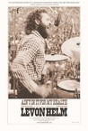 |
1727.
Ain't in It for My Health: A Film About Levon Helm
Release Date:
April 19, 2013
A documentary on Levon Helm, a founding member of The Band, begun during the creation of his first studio album in 25 years.
|

|
1728.
Lost in America
Release Date:
February 15, 1985
A husband and wife in their 30s decide to quit their jobs, live as free spirits and cruise America in a Winnebago.
|

|
1729.
The Hunter
Release Date:
January 4, 2012
Recently released from prison, Ali attempts to make the most of his return to Tehran, amidst much talk of the upcoming elections and promises of change. Forced to work nights, he still tries to spend as much time as he can with his wife and their young daughter, escaping the stress of urban life through hunting trips to the secluded forest north of the city. But one day, Ali’s family goes missing-and after a long and fruitless experience with the police, Ali’s own search for his missing daughter ends in horror, pushing him over the edge into an act of terrible violence. He flees the city, pursued by the police, but soon the line between hunter and hunted becomes difficult to define. [Olive Films]
|

|
1730.
Lore
Release Date:
February 8, 2013
Left to fend for themselves after their SS officer father and mother, a staunch Nazi believer, are interred by the victorious Allies at the end of World War II, five German children undertake a harrowing journey to reach their grandmother in the north that exposes them to the reality and consequences of their parents' actions. [Music Box Films]
|

|
1731.
A Prayer Before Dawn
Release Date:
August 10, 2018
A Prayer Before Dawn is the remarkable true story of Billy Moore, a young English boxer incarcerated in two of Thailand’s most notorious prisons. He is quickly thrown into a terrifying world of drugs and gang violence, but when the prison authorities allow him to take part in the Muay Thai boxing tournaments, he realizes this might be his chance to get out. Billy embarks on a relentless, action-packed journey from one savage fight to the next, stopping at nothing to do whatever he must to preserve his life and regain his freedom. Shot in a an actual Thai prison with a cast of primarily real inmates, A Prayer Before Dawn is a visceral, thrilling journey through an unforgettable hell on earth.
|
1732.
In America
Release Date:
November 26, 2003
From master storyteller Jim Sheridan comes a deeply personal and emotionally raw tale of a family finding its soul In America. Through the wide-open eyes of two young heroines, Sheridan transforms a devastating human tragedy into a riveting, humor-tinged story about memory, secrets, love, loss, coming together and starting over. (Fox Searchlight)
|
|

|
1733.
Morning Sun
Release Date:
October 22, 2003
The film Morning Sun attempts in the space of a two-hour documentary film to create an inner history of the Great Proletarian Cultural Revolution (c.1964-1976). It provides a multi-perspective view of a tumultuous period as seen through the eyes -- and reflected in the hearts and minds -- of members of the high-school generation that was born around the time of the founding of the People's Republic of China in 1949, and that came of age in the 1960s. (Long Bow Group, Inc.)
|
1734.
Jesus' Son
Release Date:
June 16, 2000
Stumbling across America in the 1970's, a young junkie (Crudup) searches for meaning in everything from sex and drugs to meetings with strangers.
|
|
1735.
Princess Mononoke
Release Date:
October 29, 1999
The mythological tale of a war between encroaching civilization and the beast gods of the forest. (Miramax)
|
|
1736.
Donnie Brasco
Release Date:
February 28, 1997
Al Pacino and Johnny Depp head an all-star cast in this gangland thriller about an undercover FBI agent who befriends a hitman to gain entry to the mob. (Sony)
|
|
1737.
When Harry Met Sally...
Release Date:
July 12, 1989
Will sex ruin a perfect relationship between a man and a woman? That's what Harry (Crystal) and Sally (Ryan) debate during their travels from Chicago to New York. 11 years and 2,000 miles later, they're still no closer to finding the answer. And they've never ventured past their friendship to discover the love that's right in front of them. Will these two best friends ever accept that they're meant for each other... or will they continue to deny the attraction that's existed since the first moment When Harry Met Sally? (MGM)
|
|
| 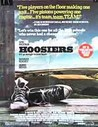 |
1738.
Hoosiers
Release Date:
November 14, 1986

A man (Hackman) gets a last-chance job coaching a small-town Indiana high-school basketball team and faces the dual challenge of bringing this underdog team to the 1951 state championship and redeeming himself from a mysterious past. (MGM)
|

|
1739.
Hara-Kiri: Death of a Samurai
Release Date:
July 20, 2012
Revenge, honor and disgrace collide when a samurai's request to commit ritual suicide leads to a tense showdown with his feudal lord. [Tribeca Film]
|
|
|
1740.
The Army of Crime
Release Date:
August 20, 2010
The poet Missak Manouchian leads a mixed bag of youngsters and immigrants in a clandestine battle against the Nazi occupation. Twenty-two men and one woman fighting for an ideal and for freedom. News of their daring attacks, including the assassination of an SS general, eventually reaches Berlin.
|
| 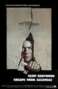 |
1741.
Escape from Alcatraz
Release Date:
June 22, 1979
Alcatraz is the most secure prison of its time. It is believed that no one can ever escape from it, until three daring men make a possible successful attempt at escaping from one of the most infamous prisons in the world.
|
| 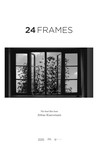 |
1742.
24 Frames
Release Date:
February 2, 2018
For what would prove to be his final film, Iranian director Abbas Kiarostami gave himself a challenge: to create a dialogue between his work as a filmmaker and his work as a photographer, bridging the two art forms to which he had dedicated his life. Setting out to reconstruct the moments immediately before and after a photograph is taken, Kiarostami selected twenty-four still images—most of them stark landscapes inhabited only by foraging birds and other wildlife—and digitally animated them into subtly evolving four-and-a-half-minute vignettes, creating a series of poignant studies in movement, perception, and time. A sustained meditation on the process of image making, 24 Frames is a graceful and elegiac farewell from one of the giants of world cinema. [Janus Films]
|
1743.
Dirty Wars
Release Date:
June 7, 2013
Investigative journalist Jeremy Scahill is pulled into a surprising journey as he chases down the hidden truth behind America's expanding covert wars.
|
|

|
1744.
Machuca
Release Date:
January 19, 2005
Set in Santiago, Chile in 1973 (and based on filmmaker Andrés Wood's own childhood), Machuca is not just a political drama, but a poignant coming-of-age film. (Film Forum)
|

|
1745.
Boyz n the Hood
Release Date:
July 12, 1991
Tre Styles (Cuba Gooding Jr.), is a teen caught between the steady, forceful guidance of his father, Furious (Laurence Fishburne), and the inescapable violence of his South Central Los Angeles neighborhood.
|

|
1746.
Night School
Release Date:
June 9, 2017
Indianapolis has one of the lowest high school graduation rates in the country. For adult learners Greg, Melissa and Shynika, finally earning their high school diplomas could be a life-changing achievement. Emmy award-winning director Andrew Cohn’s absorbing documentary observes their individual pursuits, fraught with the challenges of daily life and the broader systemic roadblocks faced by many low income Americans.
|
1747.
3:10 to Yuma
Release Date:
September 7, 2007
In Arizona in the late 1800's, infamous outlaw Ben Wade and his vicious gang of thieves and murderers have plagued the Southern Railroad. When Wade is captured, Civil War veteran Dan Evans, struggling to survive on his drought-plagued ranch, volunteers to deliver him alive to the 3:10 to Yuma, a train that will take the killer to trial. On the trail, Evans and Wade, each from very different worlds, begin to earn each other’s respect. But with Wade’s outfit on their trail – and dangers at every turn – the mission soon becomes a violent, impossible journey toward each man's destiny. (Lions Gate)
|
|

|
1748.
Jane Eyre
Release Date:
March 11, 2011
Mia Wasikowska and Michael Fassbender star in the romantic drama based on Charlotte Brontë's classic novel, from acclaimed director Cary Fukunaga. In the story, Jane Eyre flees Thornfield House, where she works as a governess for wealthy Edward Rochester. As she reflects upon the people and emotions that have defined her, it is clear that the isolated and imposing residence – and Mr. Rochester's coldness – have sorely tested the young woman's resilience, forged years earlier when she was orphaned. She must now act decisively to secure her own future and come to terms with the past that haunts her – and the terrible secret that Mr. Rochester is hiding and that she has uncovered. (Focus Features)
|

|
1749.
Actress
Release Date:
November 7, 2014
Brandy Burre had a recurring role on HBO’s The Wire when she gave up her career to start a family. When she decides to reclaim her life as an actor, the domestic world she’s carefully created crumbles around her.
|
1750.
A Monster Calls
Release Date:
December 23, 2016
12-year-old Conor (Lewis MacDougall), dealing with his mother’s (Felicity Jones) illness, a less-than-sympathetic grandmother (Sigourney Weaver), and bullying classmates, finds a most unlikely ally when a Monster appears at his bedroom window. Ancient, wild, and relentless, the Monster guides Conor on a journey of courage, faith, and truth.
|
|
1751.
Madeline's Madeline
Release Date:
August 10, 2018
Madeline (Helena Howard) has become an integral part of a prestigious physical theater troupe. When the workshop's ambitious director (Molly Parker) pushes the teenager to weave her rich interior world and troubled history with her mother (Miranda July) into their collective art, the lines between performance and reality begin to blur. The resulting battle between imagination and appropriation rips out of the rehearsal space and through all three women’s lives. [Oscilloscope]
|
|
| 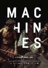 |
1752.
Machines
Release Date:
August 9, 2017
Marrying stunning visuals with social advocacy, Rahul Jain’s debut documentary — winner of the Special Jury Award for Cinematography at the 2017 Sundance Film Festival — takes audiences into the labyrinthine passages of an enormous textile factory in Gujarat, India. Jain’s camera wanders freely between pulsating machines and bubbling vats of dye to create a moving portrait of the human laborers who toil away there for 12 hours a day to eke out a meager living for their families back home. Interviews with these workers and the factory owners who employ them reveal the stark inequality and dangerous working conditions brought about by unregulated industrialization in the region. This political message is delivered amidst the unsettling beauty of the factory’s mechanical underworld and the colorful, billowing fabrics it produces. [Kino Lorber]
|

|
1753.
Buck
Release Date:
June 17, 2011
Buck, a richly textured and visually stunning film, follows Brannaman from his abusive childhood to his phenomenally successful approach to horses. A real-life “horse-whisperer”, he eschews the violence of his upbringing and teaches people to communicate with their horses through leadership and sensitivity, not punishment. Buck possesses near magical abilities as he dramatically transforms horses – and people – with his understanding, compassion and respect. In this film, the animal-human relationship becomes a metaphor for facing the daily challenges of life. A truly American story about an unsung hero, BUCK is about an ordinary man who has made an extraordinary life despite tremendous odds. (Sundance Selects)
|
1754.
And Everything Is Going Fine
Release Date:
December 10, 2010
And Everything Is Going Fine provides an intimate portrait of master monologist Spalding Gray, as described by his most critical, irreverent and insightful biographer: Spalding Gray. Director Steven Soderbergh, who collaborated with Gray on Gray’s Anatomy (1996), has sifted through rare and revealing footage to construct a riveting final monologue. There are glimpses of Gray’s father, and of his son Forrest (who provides soaring music for the end credits), but mostly this is an inspired one-man show, a bittersweet display of Spalding’s playful and embattled intelligence, his gift for tracking universal truths by looking himself squarely in the eye.(IFC Films)
|
|

|
1755.
Their Finest
Release Date:
April 7, 2017
With London emptied of its men now fighting at the Front, Catrin Cole (Gemma Arterton) is hired by the British Ministry as a "slop" scriptwriter charged with bringing "a woman's touch" to morale-boosting propaganda films. Her natural flair quickly gets her noticed by dashing movie producer Buckley (Sam Claflin) whose path would never have crossed hers in peacetime. As bombs are dropping all around them, Catrin, Buckley and a colorful crew work furiously to make a film that will warm the hearts of the nation. Although Catrin's artist husband looks down on her job, she quickly discovers there is as much camaraderie, laughter and passion behind the camera as there is onscreen. [STX Entertainment]
|

|
1756.
Creepy
Release Date:
October 21, 2016
A year after a botched hostage negotiation with a serial killer turned deadly, ex-detective Koichi (Hidetoshi Nishijima), and his wife move into a new house with a deeply strange new neighbor (Teruyuki Kagawa). His old cop colleagues come calling for his help on a mysterious case, which may be related to the strange goings-on next door, in this insidiously-constructed narrative that braids plot twists on top of plot twists and shock on top of shock.
|

|
1757.
Syriana
Release Date:
November 23, 2005
From writer/director Stephen Gaghan, winner of the Best Screenplay Academy Award for "Traffic," comes Syriana, a political thriller that unfolds against the intrigues and corruption of the global oil industry. From the players brokering back-room deals in Washington to the men toiling in the oil fields of the Persian Gulf, the film's multiple storylines weave together to illuminate the human consequences of the fierce pursuit of wealth and power. [Warner Bros.]
|
1758.
Silent Souls
Release Date:
September 16, 2011
When Miron’s beloved wife Tanya passes away, he asks his best friend Aist to help him say goodbye to her according to the rituals of the Merja culture, an ancient Finno-Ugric tribe from Lake Nero, a picturesque region in West-Central Russia. Although the Merja people assimilated into Russians in the 17th century, their myths and traditions live on in their descendants’ modern life. The two men set out on a roadtrip thousands of miles across the boundless lands. With them, two small birds in a cage. Along the way, as is custom for the Merjas, Miron shares intimate memories of his conjugal life. But as they reach the banks of the sacred lake where they will forever part with the body, he realizes he wasn’t the only one in love with Tanya…(Shadow Distribution)
|
|

|
1759.
The Breaker Upperers
Release Date:
February 15, 2019
Fifteen years ago, Mel (Madeleine Sami) and Jen (Jackie van Beek) discovered they were being two-timed by the same man. Bitter and cynical they became fast friends and formed The Breaker Upperers, a small-time business breaking up couples for cash. Now they're in their late-thirties and business is booming. They're a platonic, codependent couple who keep their cynicism alive by not getting emotionally involved with anybody else. But when they run into an old victim, Mel develops a conscience and their friendship is truly put to the test.
|
1760.
Djomeh
Release Date:
September 5, 2001
Djomeh, a shy young Afghani working in a remote rural dairy farm in Iran, falls in love with a beautiful local girl. (New Yorker Films)
|
|

|
1761.
Heat
Release Date:
December 15, 1995
A riveting story about an intense rivalry between expert thief Neil McCauley (De Niro) and volatile cop Vincent Hanna (Pacino).
|

|
1762.
The Baader Meinhof Complex
Release Date:
August 21, 2009
Germany in the 1970s: Murderous bomb attacks, the threat of terrorism and the fear of the enemy inside are rocking the very foundations of the still fragile German democracy. The radicalised children of the Nazi generation led by Andreas Baader, Ulrike Meinhof and Gudrun Ensslin are fighting a violent war against what they perceive as the new face of
fascism: American imperialism supported by the German establishment, many of whom have a Nazi past. Their aim is to create a more human society but by employing inhuman means they not only spread terror and bloodshed, they also lose their own humanity. The man who understands them is also their hunter: the head of the German police force Horst Herold. And while he succeeds in his
relentless pursuit of the young terrorists, he knows he’s only dealing with the tip of the iceberg. (Vitagraph Films)
|
1763.
Roman Holiday
Release Date:
August 27, 1953
Princess Ann (Hepburn) runs from her duties while in Italy and meets a reporter (Peck) looking for an exclusive story. He acts as if he doesn't know who she is but he soon finds himself falling in love with her.
|
|
1764.
It Felt Like Love
Release Date:
March 21, 2014
On the outskirts of Brooklyn, a fourteen-year-old's sexual quest takes a dangerous turn when she pursues an older guy and tests the boundaries between obsession and love. [Variance Films]
|
|

|
1765.
Blue Velvet
Release Date:
September 19, 1986
Set in a small American town, Blue Velvet is a dark, sensuous mystery involving the intertwining lives of four very different individuals. The film's painful realism reminds us that we are not immune to the disturbing events which transpire in Blue Velvet's sleepy community. There is a darker side of life waiting for us all. (De Laurentiis Entertainment Group Inc.)
|
1766.
Intimate Stories
Release Date:
March 4, 2005
Set in the otherworldly expanses of Southern Patagonia, this quirkily comic road-movie is a distinctive blend of bemused satire and gentle humanism. (New Yorker Films)
|
|

|
1767.
Dreamgirls
Release Date:
December 15, 2006
Twenty-five years after bringing Broadway audiences to their feet, the Tony Award-winning musical sensation Dreamgirls comes to the big screen. Set in the turbulent early 1960s to mid-70s, Dreamgirls follows the rise of a trio of women (Hudson, Knowles and Rose) who have formed a promising girl group called The Dreamettes. (Paramount Pictures)
|

|
1768.
Outside In
Release Date:
March 30, 2018
After serving 20 years for the crime of essentially being in the wrong place at the wrong time, 38-year-old Chris (Jay Duplass) is granted early parole thanks largely to the tireless advocacy of Carol (Edie Falco), his former high-school teacher. As he struggles with the challenges of navigating the modern world as an ex-con, and with a fraught relationship with his brother Ted (Ben Schwartz), Chris ends up confessing his romantic love for Carol — a love that, given her marital status, Carol cannot reciprocate. Or can she? Carol longs for something her husband no longer provides. Meanwhile, Carol’s daughter Hildy (Kaitlyn Dever) befriends Chris, finding a kindred spirit in this awkward, tormented older guy.
|
1769.
Dogtown and Z-Boys
Release Date:
April 26, 2002
This documentary tells the true story of how kids living in Santa Monica, CA in the 1970's brought their surfing styles into skateboarding and revolutionized the sport.
|
|
| 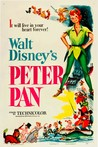 |
1770.
Peter Pan
Release Date:
February 5, 1953
Wendy and her brothers are whisked away to the magical world of Neverland with the hero of their stories, Peter Pan.
|

|
1771.
Escape from New York
Release Date:
July 10, 1981
In 1997, when the U.S. president crashes into Manhattan, now a giant maximum security prison, a convicted bank robber (Kurt Russell) is sent in to rescue him.
|

|
1772.
The Death and Life of Marsha P. Johnson
Release Date:
October 6, 2017
The Death and Life of Marsha P. Johnson reexamines the death of a beloved icon of the trans world while celebrating the story of two landmark pioneers of the trans-rights movement, Marsha P. Johnson and Sylvia Rivera.
|

|
1773.
Flight
Release Date:
November 2, 2012
Flight tells the redemption story of Whip, a commercial airline pilot who pulls off a heroic feat of flying in a damaged plane, saving 98 lives on a flight carrying 106 people. While the world begs to embrace him as a true American Hero, the everyman struggles with this label as he is forced to hold up to the scrutiny of an investigation that brings into question his behavior the night before the doomed flight. (Paramount Pictures)
|
1774.
99 Homes
Release Date:
September 25, 2015
Charismatic and ruthless businessman Rick Carver (Michael Shannon), is making a killing by repossessing homes - gaming the real estate market, Wall Street banks and the US government. When he evicts Dennis Nash (Andrew Garfield), a single father trying to care for his mother (Laura Dern) and young son (Noah Lomax), Nash becomes so desperate to provide for his family that he goes to work for Carver – the very man who evicted him in the first place. Carver promises Nash a way to regain his home and earn security for his family, but slyly seduces him into a lifestyle of wealth and glamour. It is a deal-with-the-devil that comes with an increasingly high cost - on Carver's orders, Nash must evict families from their homes. As Nash falls deeper into Carver's web, he finds his situation grows more brutal and dangerous than he ever imagined.
|
|

|
1775.
Father of My Children
Release Date:
May 28, 2010
Grégoire, a Parisian film producer, has it all — a beautiful wife, three adorable daughters, wealth and a buzzing career. On the surface he seems invincible, maintaining humor and charm as he tirelessly juggles the demands of his production company with his family's needs. But when Grégoire's reserves — both financial and emotional — reach a dramatic breaking point, his family's love and resilience is
tested. (IFC Films)
|

|
1776.
The Lunchbox
Release Date:
February 28, 2014
A mistaken delivery in Mumbai's famously efficient lunchbox delivery system connects a young housewife to an old man in the dusk of his life as they build a fantasy world together through notes in the lunchbox. Gradually, this fantasy threatens to overwhelm their reality.
|
1777.
Dave
Release Date:
May 7, 1993
To avoid a potentially explosive scandal when the U.S. President goes into a coma, an affable temp agency owner with an uncanny resemblance is put in his place.
|
|

|
1778.
The Light of the Moon
Release Date:
November 1, 2017
Bonnie (Stephanie Beatriz), a young and successful Latina architect, is sexually assaulted while walking home from an evening out with friends in Brooklyn. At first, she attempts to keep the assault a secret from her long-term boyfriend Matt, but the truth quickly emerges. Bonnie emphatically denies the impact of what has just happened to her. She fights to regain normalcy and control of her life, but returning to her old life is more complicated than expected. Her attempt to recapture the intimacy she previously had with Matt falters and cracks begin to surface in their relationship. Another attack in the neighborhood only drives Bonnie further into denial, before an encounter with an at-risk woman causes her to face the truth and confront her own self-blame.
|

|
1779.
The Death of Louis XIV
Release Date:
March 31, 2017
Versailles, August 1715. Back from hunting, Louis XIV (Jean-Pierre Léaud) feels pain in his leg. A serious fever erupts, which marks the beginning of the decline of the greatest King of France. Surrounded by a horde of doctors and his closest counselors who come in turns at his bedside sensing the impending power vacuum, the Sun King struggles to run the country from his bed.
|

|
1780.
Tokyo Waka: A City Poem
Release Date:
August 28, 2013
A poem about a city, its people, and 20,000 crows.
|
| 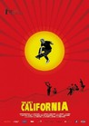 |
1781.
This Ain't California
Release Date:
April 12, 2013
This Ain't California is a celebration of the lust for life, a contemporary documentary trip into the world of skateboarding in the German Democratic Republic. The film follows its three heroes from their childhood in the seventies through their teenage rebellion in the eighties to the summer 1989 when their life changed forever.
|
| 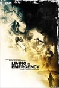 |
1782.
Living in Emergency: Stories of Doctors Without Borders
Release Date:
June 4, 2010
Two volunteers are new recruits: a 26 year-old Australian doctor stranded in a remote bush clinic and an American surgeon struggling to cope under the load of emergency cases in a shattered capital city. Two others are experienced field hands: a dynamic Head of Mission, valiantly trying to keep morale high and tensions under control, and an exhausted veteran, who has seen too much horror and wants out. Amidst the chaos, each volunteer must confront the severe challenges of the work, the tough choices, and the limits of their own idealism. (Truly Indie)
|

|
1783.
Shine a Light
Release Date:
April 4, 2008
Martin Scorsese's concert documentary Shine a Light will show the world the Rolling Stones as they've never been seen before. Filming at the famed Beacon Theatre in New York City in fall 2006, Scorsese assembled a legendary team of cinematographers to capture the raw energy of the legendary band. (Paramount)
|

|
1784.
A Very Long Engagement
Release Date:
November 26, 2004
An extraordinary love story set against the background of World War I.
|

|
1785.
This So-Called Disaster: Sam Shepard Directs the Late Henry Moss
Release Date:
April 21, 2004
After appearing in Michael Almereyda's film version of Hamlet (in which he played the ghost), Sam Shepard invited the filmmaker to document the staging of his most recent play, "The Late Henry Moss," when it premiered in San Francisco in the fall of 2000. The resulting documentary is a remarkable group portrait - a vivid look at masterful performers working their way through a process of creative discovery. (IFC Films)
|
1786.
Blue Car
Release Date:
May 2, 2003
An evocative drama that tells the story of an 18 year-old girl, abandoned by her father and neglected by her overworked mother, who turns for solace and inspiration to her English teacher. (Miramax)
|
|
1787.
The Sleepy Time Gal
Release Date:
May 29, 2002
Three characters seeking to revive long lost relationships discover that you cannot return to the past, yet you never entirely leave it behind.
|
|

|
1788.
Ratcatcher
Release Date:
October 13, 2000
The story of a twelve year old boy (Eadie) living in working-class Glasgow, Scotland during the 1970's garbage strikes, Ratcatcher portrays the difficulties of his reality and his desire to escape through dreams.
|

|
1789.
Chuck & Buck
Release Date:
July 14, 2000
One of two childhood best friends who seems stuck in adolescence wants to become a big part of his old friend's life after his mother's death.
|
1790.
La Ciudad (The City)
Release Date:
October 22, 1999
Featuring mostly non-actors, the film follows four separate stories of Latin American immigrant life in present day New York City.
|
|

|
1791.
Menace II Society
Release Date:
May 26, 1993
A Watts teenager becomes so immersed in his violent world, he can't get out. (New Line Cinema)
|

|
1792.
Cartel Land
Release Date:
July 3, 2015
In the Mexican state of Michoacán, Dr. Jose Mireles, a small-town physician known as "El Doctor," leads the Autodefensas, a citizen uprising against the violent Knights Templar drug cartel that has wreaked havoc on the region for years. Meanwhile, in Arizona's Altar Valley – a narrow, 52-mile-long desert corridor known as Cocaine Alley – Tim "Nailer" Foley, an American veteran, heads a small paramilitary group called Arizona Border Recon, whose goal is to stop Mexico’s drug wars from seeping across our border.
|
| 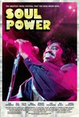 |
1793.
Soul Power
Release Date:
July 10, 2009
In 1974, the most celebrated American R&B acts of the time came together with the most renowned musical groups in Africa for a 12-hour, three-night long concert held in Kinshasa, Zaire. The dream-child of Hugh Masekela and Stewart Levine, this music
festival became a reality when they convinced boxing promoter Don King to combine the event with “The Rumble in the Jungle,” the epic fight between Muhammad Ali and George Foreman, previously chronicled in the Academy Award-winning documentary When We Were Kings. (Sony Classics)
|

|
1794.
An Honest Liar
Release Date:
March 6, 2015
An Honest Liar is a feature documentary about the world-famous magician, escape artist, and world-renowned enemy of deception, James ‘The Amazing’ Randi. The film brings to life Randi’s intricate investigations that publicly exposed psychics, faith healers, and con-artists with quasi-religious fervor. A master deceiver who came out of the closet at the age of 81, Randi created fictional characters, fake psychics, and even turned his partner of 25 years, the artist Jose Alvarez, into a sham guru named Carlos. But when a shocking revelation in Randi’s personal life is discovered, it isn’t clear whether Randi is still the deceiver – or the deceived.
|
| 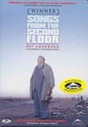 |
1795.
Songs from the Second Floor
Release Date:
July 3, 2002
Composed of a series of immaculately staged tableaux, Songs From the Second Floor is a stylized black comedy-turned-nightmare. [Film Forum]
|

|
1796.
Shotgun Stories
Release Date:
March 26, 2008
Son Hayes never speaks of the scars on his back. The shotgun pellets left under his skin make for a sporadic pattern of blue-black dots. The men he works with take bets on how he got them. His brothers, Boy and Kid Hayes, don't discuss it. His past, just like the scars, is never far behind him. This stands true for the memory of his father, a man who never bothered to give his children proper names. He left the three brothers, Son, Boy, and Kid, when they were young. Their last impressions of him were of a violent drunk who never hesitated to put his own needs ahead of his family's. The brothers were left to be raised by their mother, a hateful woman who to this day blames her children for the life she's been left with and the loss of the man she couldn't keep. Their father, having left the memory of his children as completely as he left their home, managed to move on and put his life back together. He sobered up, became a devout Christian, married a wonderful woman, and fathered four new sons--all of whom received proper names. His life became a model that most would aspire to--a man successful in business, community, and family--with his only true failing being the sons he turned his back on. (Liberation Entertainment)
|

|
1797.
The Price of Everything
Release Date:
October 19, 2018
With unprecedented access to pivotal artists and the white-hot market surrounding them, this film dives deep into the contemporary art world, holding a fun-house mirror up to our values and our times -- where everything can be bought and sold.
|
| 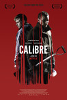 |
1798.
Calibre
Release Date:
June 29, 2018
Two lifelong friends head up to an isolated Scottish Highlands village for a weekend hunting trip. Nothing could prepare them for what follows.
|
1799.
Anita O'Day: The Life of a Jazz Singer
Release Date:
August 15, 2008
The film is a thorough investigation of the life and times of the great jazz vocalist, Anita O’Day. Filmmakers Robbie Cavolina and Ian McCrudden dedicated many years to capturing the engaging story of O’Day’s rise to fame: following her career from her youthful days singing alongside greats like Hoagy Carmichael, Gene Krupa, Stan Kenton, Louis Armstrong and Roy Eldridge to darker times in her life; drug addiction, multiple marriages, abortions, arrests and finally, the triumphant completion of her last album in 2006, shortly before her death at 87.
|
|

|
1800.
Soul Kitchen
Release Date:
August 20, 2010
In Hamburg, German-Greek chef Zinos unknowingly disturbs the peace in his locals-only restaurant by hiring a more talented chef.
|